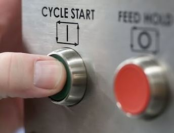
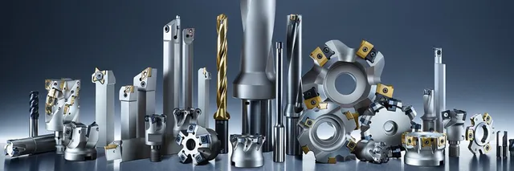
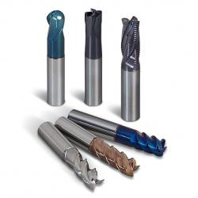
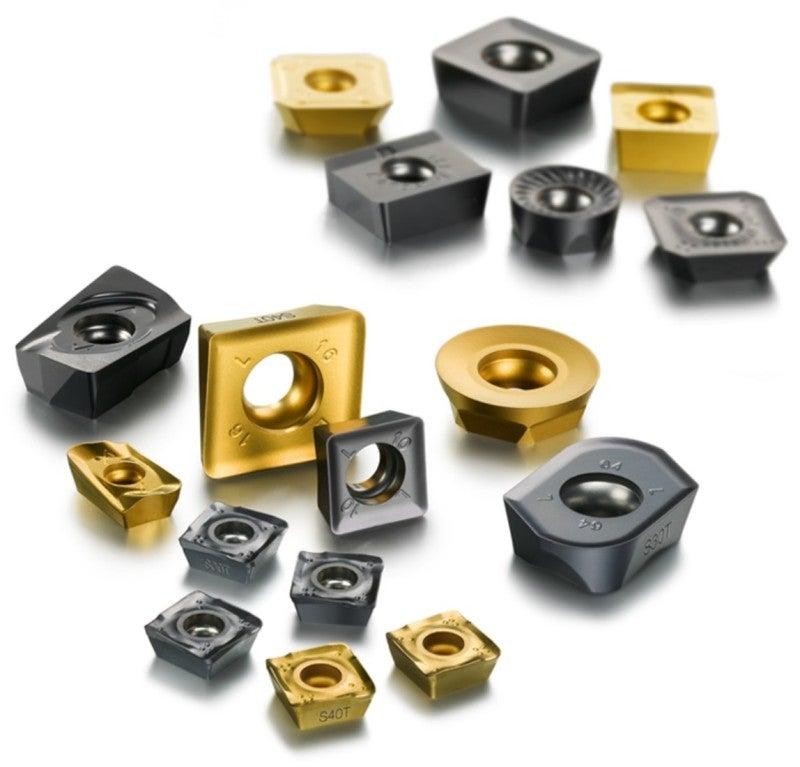
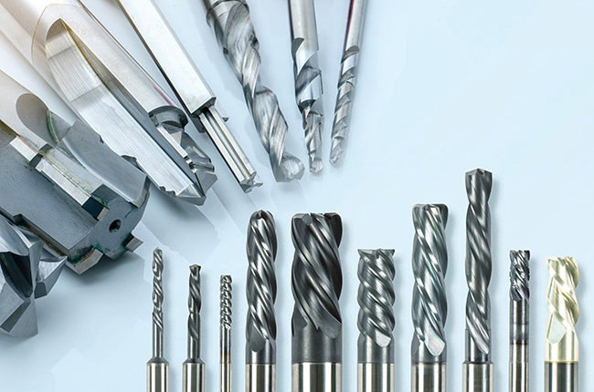
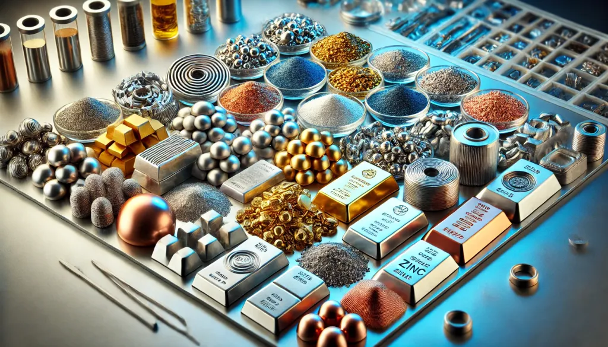

Comment Mettre en Marche et Régler les Machines?
Étapes Générales :
- Inspection : Vérifiez que la machine est propre, bien lubrifiée et exempte de tout obstacle.
- Installation de la pièce : Fixez solidement la pièce à usiner dans le mandrin ou sur la table de travail (étau, brides...).
- Choix de l’outil : Sélectionnez un outil adapté à l'opération prévue (fraisage, tournage, rainurage, etc.).
- Réglage des paramètres : Ajustez la vitesse de rotation, l’avance et la profondeur de coupe en fonction du matériau.
- Test : Effectuez une passe d’essai pour vérifier la précision et ajuster si nécessaire.
Outils de Coupe
1. Outils de coupe pour le fraisage
- Fraises cylindriques : Pour l'usinage des surfaces planes et des rainures.
- Fraises à bout plat : Idéales pour créer des rainures, des poches et des surfaces planes.
- Fraises à bout hémisphérique : Pour les contours 3D et les surfaces courbes.
- Fraises à surfacer : Pour enlever de grandes quantités de matière sur des surfaces planes.
- Fraises à chanfreiner : Pour créer des chanfreins ou des biseaux.
- Fraises à rainurer : Pour les rainures simples, en T ou en queue d'aronde.
2. Outils de coupe pour le tournage

- Poinçons à dresser : Pour l'usinage des faces planes.
- Poinçons à gorge : Pour créer des rainures ou des gorges.
- Outils de filetage : Conçus pour réaliser des filetages internes ou externes.
- Outils d'alésage : Pour élargir ou ajuster les diamètres internes des pièces.
- Outils de tronçonnage : Pour couper une pièce ou séparer une partie de la matière brute.
3. Outils en carbure monobloc
Caractéristiques : Résistance élevée à l'usure et dureté exceptionnelle.
Applications :
- Usinage de matériaux durs (aciers trempés, inox).
- Utilisés pour les vitesses de coupe élevées.
4. Plaquettes interchangeables (carbure ou céramique)
Caractéristiques : Plaquettes remplaçables montées sur des porte-outils.
Avantages :
- Réduction des temps d'arrêt pour affûtage.
- Convient pour le fraisage, le tournage et l'alésage.
5. Forets
- Forets hélicoïdaux : Les plus courants pour percer des trous droits.
- Forets à centre : Utilisés pour des perçages de haute précision.
- Forets étagés : Permettent de réaliser plusieurs diamètres avec un seul outil.
6. Alésoirs
Caractéristiques : Outils cylindriques pour ajuster avec précision le diamètre d’un trou.
Applications :
- Amélioration de la qualité de surface et de la tolérance des trous percés.
7. Outils de filetage
- Tarauds : Pour créer des filetages internes.
- Filières : Pour les filetages externes.
- Plaquettes de filetage : Utilisées sur machines CNC pour des filetages précis.
8. Outils pour matériaux spécifiques
- Outils diamantés : Usinage ultra-précis de matériaux durs (verre, composites, céramique).
- Outils PCD (Polycrystalline Diamond) : Idéaux pour les matériaux abrasifs comme les composites.
- Outils CBN (Cubic Boron Nitride) : Usinage des aciers trempés.
9. Outils de coupe à revêtements
- TiN (Nitrure de titane) : Réduction de l’usure et meilleure évacuation des copeaux.
- TiAlN (Nitrure de titane-aluminium) : Résistance à la chaleur accrue.
- CVD et PVD : Technologies de revêtement pour les applications exigeantes.
10. Accessoires courants
- Mandrins : Fixation de l'outil sur la machine.
- Porte-outils : Maintien des outils tels que les plaquettes ou les alésoirs.
- Clés dynamométriques : Pour monter les outils en respectant les couples de serrage recommandés.
Outils de Mesure
- Pied à coulisse : Mesures précises des dimensions extérieures, intérieures et des profondeurs.
- Micromètre : Pour des mesures de haute précision.
- Comparateur : Vérifie les déviations et concentricités.
- Rugosimètre : Analyse la finition de surface.
Choix des Outils en Fonction des Matériaux
1. Acier non allié et faiblement allié
- Outils recommandés : Acier rapide (HSS) pour les faibles vitesses, plaquettes en carbure revêtues (TiN, TiAlN) pour les vitesses élevées.
- Applications : Usinage général (fraisage, tournage, perçage). Convient pour le dégrossissage et la finition.
2. Acier allié et aciers trempés
- Outils recommandés : Outils en carbure monobloc ou plaquettes en carbure. Outils CBN (Cubic Boron Nitride) pour les aciers très durs (>50 HRC).
- Applications : Usinage à haute précision et à haute résistance. Nécessite des outils résistants à l’usure et aux hautes températures.
3. Fonte
- Outils recommandés : Plaquettes en carbure sans revêtement pour la fonte grise. Plaquettes en céramique pour les fontes ductiles.
- Applications : Dégrossissage et finition des pièces moulées. Excellente capacité d’absorption des vibrations.
4. Aluminium et alliages légers
- Outils recommandés : Outils en carbure monobloc à grande hélice (40°–45°). Outils PCD (Polycrystalline Diamond) pour des finitions ultra-précises.
- Applications : Usinage rapide grâce à la conductivité thermique élevée de l'aluminium. Prévention des bavures et des collages en utilisant des revêtements spécifiques (TiN).
5. Inox (acier inoxydable)
- Outils recommandés : Plaquettes en carbure revêtues (TiAlN, TiCN). Outils avec géométrie positive pour éviter l'accumulation de matière.
- Applications : Usinage de précision à des vitesses modérées. Réduction des vibrations et de l'échauffement pour éviter l'écrouissage.
6. Titane et alliages de titane
- Outils recommandés : Plaquettes en carbure à arêtes vives. Outils avec revêtements résistants à la chaleur (TiAlN).
- Applications : Faible conduction thermique nécessite une bonne gestion de la chaleur. Usinage à faible avance et haute précision pour éviter l'usure prématurée.
7. Matériaux durs et abrasifs (céramique, composites, etc.)
- Outils recommandés : Outils diamantés (PCD) pour les composites. Outils en céramique ou CBN pour les matériaux durs.
- Applications : Usinage de haute précision et de finition. Nécessitent des machines rigides pour éviter les vibrations.
8. Plastiques et polymères
- Outils recommandés : Fraises en HSS ou carbure avec géométrie spécifique pour plastiques. Arêtes vives pour éviter les éclats ou la fusion.
- Applications : Usinage à haute vitesse pour des découpes propres. Gestion de la chaleur pour éviter la déformation.
Facteurs clés pour le choix des outils
- Propriétés du matériau : Dureté, conductivité thermique, ductilité.
- Type d'opération : Dégrossissage, finition, perçage, filetage.
- Conditions de coupe : Vitesse, avance, profondeur de coupe.
- Revêtement de l’outil : Augmente la durabilité et réduit la friction (ex. : TiN, TiAlN).
- Système de refroidissement : Nécessaire pour les matériaux sensibles à la chaleur (titane, inox).